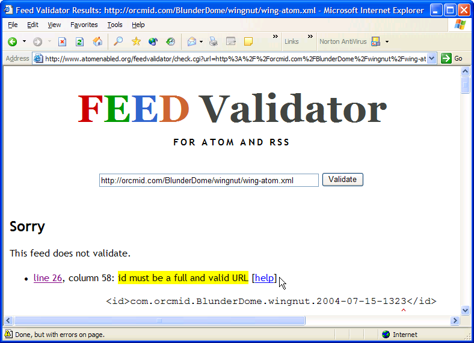

Incident Report X040702
Blogger FTP Corruption
Syndication Lockdown Notice
|
|
Incident Report X040702 |
The current status of the individual blogs can be found at X040701: Web Log Status.
Whenever Blogger posts an entry to one of these blogs after removal of a lock-down, any lockdown notice will automatically disappear from the feeds. (There may be a blog entry that supplants it, though.)
In the creation of the latest notice for the current incident, three of the site feeds do not validate because of XML encoding versus HTTP ContentType conflicts. Having that not be the case for one of them leaves me appropriately clueless. This problem is being researched as a separate topic.
[updated 2004-07-24-15:30 -0700 corrected for acceptabillity to the on-line Atom validator. The permanent <id>-element for this notice is now a reachable web location. Incident details are developed in Incident Report X040702: Blogger FTP Corruption. Status of these blogs is summarized at X040701: Web Log Status.]
IMPORTANT NOTICE : 2004-07-15-20:23Z - On Friday, July 2, while posting a new article on Professor von Clueless in the Blunder Dome, Blogger transferred unintelligible binary to the default (current) page, an archive page, the posting page and the Atom feed. That blog is now rolled-back to the last backed-up content before that event. There will be no further posting to my non-experimental Blogger-intermediated Blogs until the situation is resolved. THESE BLOGS ARE CURRENTLY LOCKED DOWN: Orcmid's Lair, Numbering Peano, and Professor von Clueless in the Blunder Dome. Blogger is denied FTP access to those blogs and comment postings will fail. The only active blog is the experimental Spanner Wingnut Muddleware Laboratory. Live forensic and trouble-shooting analysis is performed there. That makes it a dangerous place. I do not recommend subscribing to that atom feed because it can be corrupted during incident trouble-shooting. -- Dennis E. Hamilton
Updating to a new version of the notice is accomplished by simply splicing the new <entry>-element in place of the previous version and then updating the <modified>-element value of the overall feed. The updated file will be noticed by aggregators after being published to the proper location on the public web-site host. Where possible, the validation button refers to a saved copy that is validated, so that there is a stable test independent of later changes to the published file. (Alternatively, the invalidAtom button is used, and it is demonstrated with a copy of the site feed that fails validation.)

The variants of this notice for site feeds on the three "production" blogs had to be redone when it was discovered that the validAtom button was inaccurate. Also, those buttons should now link to a frozen copy of a site feed, since (in)validity could change as the result of a feed update. I didn't make those changes because I didn't want to send yet-another-reposting to the production blogs. These are ephemeral blog entries anyhow and as soon as I have the blogs unlocked the better. [dh:2004-07-26-12:51]
It is also necessary to check all links in the document to ensure that they are all absolute and also working from every location. In particular, the links should be confirmed from the feed document.
My XML editor complains that the entity is not defined. That makes sense. There is no DTD, so I don't have any way to deal with it except to use   in its place. I do that by search and replace every time I learn there are more of entities to deal with (from FrontPage, and also from me out of habit).
The on-line validator produces the following report for wing-atom.xml with the original lockdown notice:

The requirement is apparently for URI structure to be satisfied, although the message is definitely about a URL. I am taking care of that by making this present page the URL to use as the permanent identification for the lock-down notice entry that it describes. (The "errors on page" is a firewall mobile-code-blocking artifact.)
The syndicated notice was created in the Atom feed for Spanner Wingnut and then replicated into the Atom feeds for Orcmid's Lair, Professor von Clueless, and Numbering Peano. The content presents as follows:
The markup was adjusted manually by making the following inserting a new <entry>-element in front of the others in the wing-atom.xml file:
<?xml version="1.0" encoding="UTF-8" standalone="yes"?> <?xml-stylesheet href="http://www.blogger.com/styles/atom.css" type="text/css"?> <feed version="0.3" xmlns="http://purl.org/atom/ns#"> <!-- 2004-07-15-12:36 Manual Editing of last feed to confirm valid manual adjustments to put an announcement in the feed. A feed-level <author> is added, and the <modified> element is updated. I added a warning entry $$Header: /OrcmidCompagno/BlunderDome/wingnut/wing-atom.xml 5 04-07-15 14:54 Orcmid $ --> <link href="http://www.blogger.com/atom/7350804" rel="service.post"title="Spanner Wingnut's Muddleware Lab" type="application/x.atom+xml"/> <link href="http://www.blogger.com/atom/7350804" rel="service.feed" title="Spanner Wingnut's Muddleware Lab" type="application/x.atom+xml"/> <title mode="escaped" type="text/html">Spanner Wingnut's Muddleware Lab</title> <author><name>Dennis E. Hamilton</name></author> <tagline mode="escaped" type="text/html">Laboratory for experimental modification of web application features and functions before incorporating into anything serious.&nbsp; Disorganized and unkempt, just like the poor lad himself.</tagline> <link href="http://orcmid.com/BlunderDome/wingnut/" rel="alternate" title="Spanner Wingnut's Muddleware Lab" type="text/html"/> <id>tag:blogger.com,1999:blog-7350804</id> <modified>2004-07-15T21:54:00Z</modified> <generator url="http://www.blogger.com/" version="5.15">Blogger</generator> <info mode="xml" type="text/html"> <div xmlns="http://www.w3.org/1999/xhtml">This is an Atom formatted XML site feed. It is intended to be viewed in a Newsreader or syndicated to another site. Please visit the <a href="http://help.blogger.com/bin/answer.py?answer=697">Blogger Knowledge Base</a> for more info.</div> </info> <entry> <title mode="escaped" type="text/html">Blog Lock-Down In Effect</title> <link href="http://orcmid.com/BlunderDome/wingnut/" rel="alternate" title="Blog Lock-Down In Effect" type="text/html"/> <id>com.orcmid.BlunderDome.wingnut.2004-07-15-1323</id> <modified>2004-07-15T21:54:00Z</modified> <issued>2004-07-15T14:00:00-07:00</issued> <content type="application/xhtml+xml" xml:base="http://orcmid.com/BlunderDome/wingnut/" xml:lang="en-US" > <div xmlns="http://www.w3.org/1999/xhtml"> <!-- The Content is inserted here. The only thing unusual is that the entity is not defined so   must be used instead. Also, absolute URLs are used so that the content displays properly when viewed on-line anywhere. --> </div> </content> </entry> <!-- The original entries follow here, until there are no more entries. --> </feed>The feed was edited using jEdit with the XML plug-in. The rules for the feed were analyzed and developed in accordance with Labnote B040701: Atom Feed Synthesis.
| You are navigating Orcmid's Lair |
created 2004-07-23-07:39 -0700 (pdt) by orcmid |